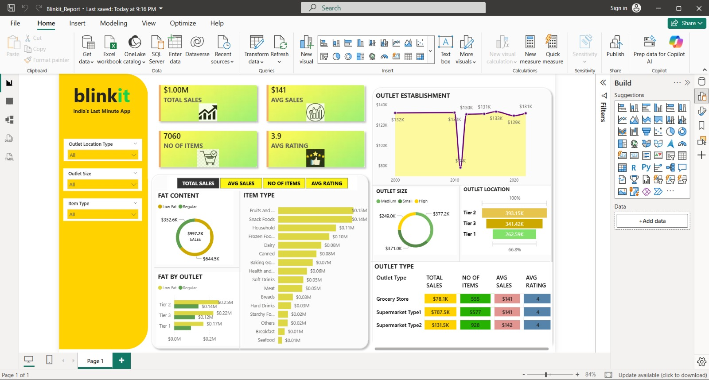

01
Power BIBlinkit Sales Performance Dashboard

Interactive dashboard analysing 1,000+ grocery sales records across outlet types, sizes, and locations.
- Created DAX KPIs for sales, average sales, item count, and average rating.
- Used Power Query for data cleaning, transformation, and modelling.
- Designed slicers and visualisations to compare outlet and product performance.
Power BIDAXPower QueryDashboard design